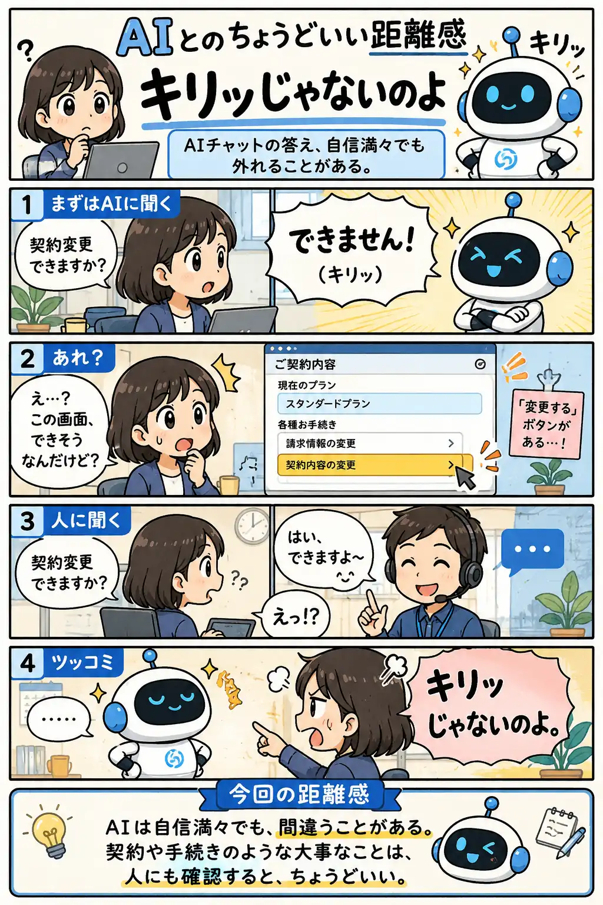

#064
キリッじゃないのよ
AIチャットの答え、自信満々でも外れることがある。

メモ
AIチャットは、すぐ答えてくれるぶん便利です。
ただ、契約や手続きのように条件で答えが変わる話では、断定的な回答が外れることもあります。
画面に違和感がある時は、そこで止まらず人のサポートにも確認する。二度手間に見えても、最後の安心につながります。
今回の距離感
AIは自信満々でも、間違うことがある。契約や手続きのような大事なことは、人にも確認すると、ちょうどいい。
#064
AIチャットの答え、自信満々でも外れることがある。

AIチャットは、すぐ答えてくれるぶん便利です。
ただ、契約や手続きのように条件で答えが変わる話では、断定的な回答が外れることもあります。
画面に違和感がある時は、そこで止まらず人のサポートにも確認する。二度手間に見えても、最後の安心につながります。
AIは自信満々でも、間違うことがある。契約や手続きのような大事なことは、人にも確認すると、ちょうどいい。